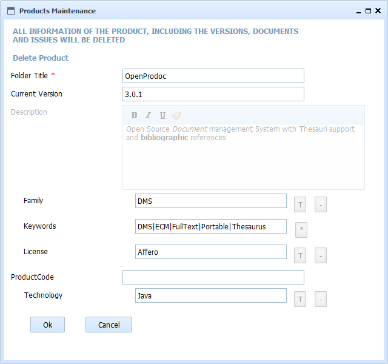

This form ask for confirmation before DELETING a Product. When deleting a product, All the information of versions, dependencies with other product and any documents or folder at ANY level are deleted. Documents can still be restored using the paperbin of penprodoc, but the folders information and the structure iwil be lost.

In SMO Tree there is a complete view of operations and forms.